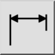
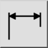
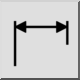
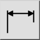

Horizontale
Barre d'outil / icône :
 

Menu : Cotation > Horizontale
Raccourci : D, H
Commandes : dimhor | dimhorizontal | dh
Ceci est une traduction automatique.
Barre d'outil / icône :
 

Menu : Cotation > Horizontale
Raccourci : D, H
Commandes : dimhor | dimhorizontal | dh
Cet outil se comporte essentiellement comme l'outil cotation linéaire, excepté la possibilité d'entrer un angle.